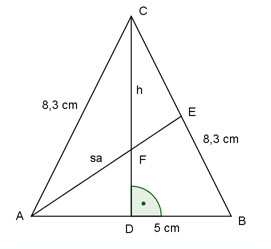

Flächenberechnungen Aufgabe 57 Ein gleichschenkliges Dreieck hat eine Grundseite von 5 cm und Schenkel von 8,3 cm. Wie lang ist die Seitenhalbierende eines Schenkels?

Satz von Pythagoras im Dreieck ADC c a2 = h2 + (---)2 2 8,32 = h2 + 2,52 | -2,52 h2 = 68,9 - 6,25 = 62,65 h = √62,65 = 7,9 cm Der Punkt F ist der Schwerpunkt des Dreiecks und unterteilt die Seitenhalbierenden im Verhältnis 2 : 1. Satz von Pythagoras im Dreieck ADF: h ist die Seitenhalbierende von c. 2 1 c (--- sa)2 = (--- h)2 + (---)2 3 3 2 4 1 --- sa2 = --- * 7,92 + 6,25 | *9 9 9 4sa2 = 62,4 + 56,25 4sa2 = 116,25 |:4 sa2 = 29,1 sa = √29,1 = 5,4 cm